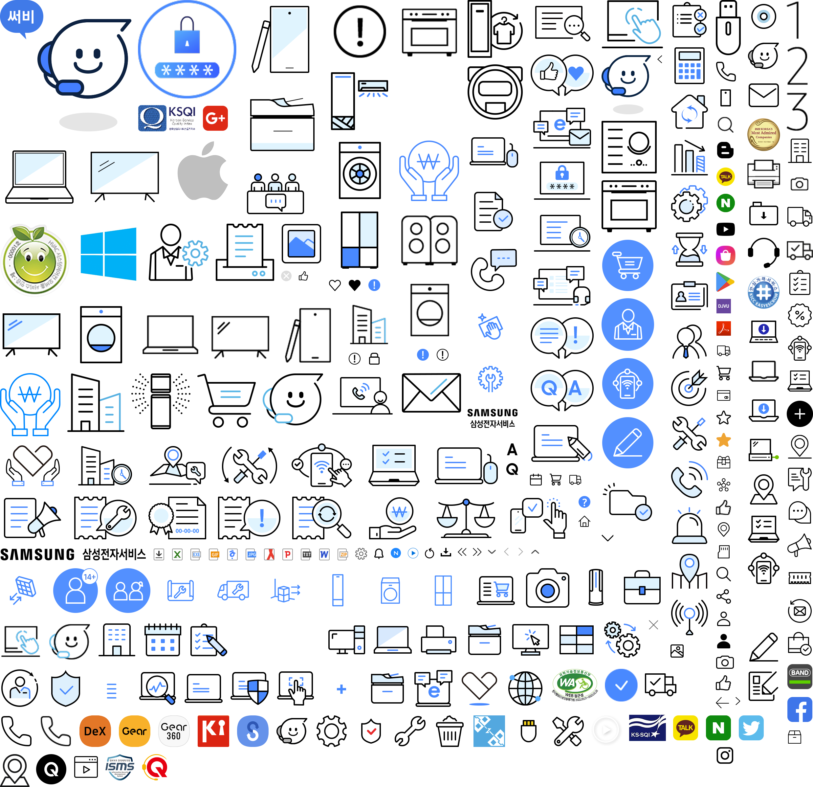

<!DOCTYPE html>
<html lang="en">
<head>
    <meta charset="UTF-8">
    <meta name="viewport" content="width=device-width, initial-scale=1.0">
    <title>Document</title>
    <style>
        .icon {
            background: url('img.png') no-repeat -12px -1516px;
	        width: 174px;
	        height: 122px;

            /* 위 값을 수동으로 맞 추기는 손이 많이간다 */
            /* http://www.spritecow.com/같은 도구 활용(jpg,png파일) */
            /* 하지만 svg포맷의 등장으로 사용빈도수가 떨어짐 */
        }
    </style>
</head>
<body>
    <!-- 스트라이프는 이미지로 사용하지않는다 -->
    <!-- sprite coW 웹사이트에서 open img로 들어가서 이미지올린후 복붙해서 사용 -->
    
    <div class="icon">

    </div>
</body>
</html>